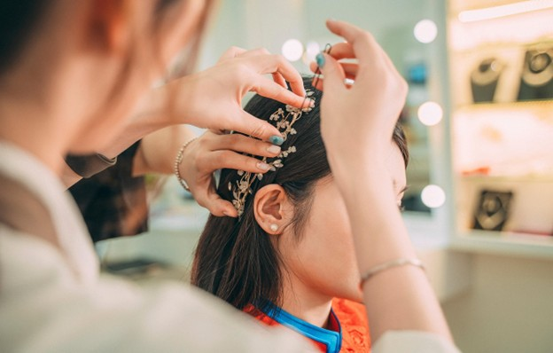

Welcome to You Go Natural: Embrace Your Beautiful Hair Naturally.
At You Go Natural, we believe in empowering individuals to embrace their natural beauty through the perfect blend of style and care.
Our collection of hair accessories, turbans, hair wraps, and natural hair care are designed to enhance your unique look while nourishing your hair. Whether you're looking to protect your hair or add a stylish flair, we have everything you need to elevate your hair care routine.
Why Natural Hair Care Matters
Natural hair is a beautiful expression of who you are, and it deserves to be treated with care. Using the right products and accessories ensures that your hair stays healthy, vibrant, and strong. At You Go Natural, we offer a range of natural hair care solutions that promote growth, hydration, and protection from damage. Our carefully curated products help restore and maintain your natural curls, coils, and waves, so you can feel confident and beautiful every day.
The Benefits of Using Natural Hair Care Products
•Gentle on Your Scalp and Hair:Natural ingredients are free from harsh chemicals, making them perfect for all hair types, especially curly and textured hair.
•Promotes Healthy Growth:With the right natural products, you can nourish your scalp, leading to stronger, longer hair.
•Hydration and Moisture: Our products lock in moisture to keep your hair soft, hydrated, and frizz-free.
Elevate Your Look with Turbans and Hair Wraps
Style Meets Function: The Beauty of Turbans
Turbans are not only a fashion statement but also an excellent way to protect your natural hair. They offer a versatile style that can be worn in various ways, from chic to casual. Whether you're shielding your hair from the sun or keeping it neat during workouts, turbans provide both comfort and flair.
•Comfortable Fit: Our turbans are made from soft, breathable materials that ensure comfort while keeping your hair in place.
•Variety of Styles: From solid colors to beautiful prints, there’s a turban style for every occasion and personality.
•Protect Your Curls:Turbans help protect your curls from friction that can lead to breakage, especially when you're sleeping.
Hair Wraps for Daily Care and Style
Hair wraps are the perfect solution for adding both beauty and care to your hair routine. Whether you’re winding down for the evening or looking for a quick fix to keep your curls intact, our hair wraps are designed to offer the best protection.
•Prevent Hair Breakage:Hair wraps protect delicate strands from breakage caused by friction with pillows and other fabrics.
•Maintain Your Natural Curls:Wraps help keep curls intact and preserve their shape overnight or during the day, preventing frizz and tangles.
•Ideal for All Hair Types:: From fine hair to thick curls, our wraps cater to all hair textures, ensuring optimal protection and comfort.
Discover the Perfect Hair Accessories for Your Natural Style
Accessorize with Purpose
Hair accessories are more than just a way to complete your look; they play a key role in keeping your hair protected and well-maintained. From stylish pins to elegant clips, the right accessories can elevate your hairstyle and keep your hair in place all day long.
•Functional and Beautiful: Our collection of hair accessories adds both style and function, keeping your hair neat without compromising on beauty.
•Perfect for Every Occasion: Whether you’re heading to a party, running errands, or winding down at home, our accessories complement any look.
•Comfortable and Gentle: Made with high-quality materials, our accessories are gentle on your hair, preventing damage and ensuring secure fit.
Styling Tips for Natural Hair
Natural hair care goes beyond the products you use—how you style your hair matters too. Here are some tips for styling natural hair with accessories that complement your unique texture:
•Protective Styles: Use turbans and wraps to protect your hair from environmental damage and minimize the need for daily heat styling.•Effortless Curls: Use hair clips to create beautiful curls or keep them in place while they set.
•Versatile Hairstyles: Explore different ways to wear your accessories, such as pairing a turban with a sleek bun or a hair wrap with a relaxed, flowing look.

Your Journey to Healthy, Beautiful Hair Starts Here
At You Go Natural, we understand that everyone’s natural hair journey is unique. Whether you're just starting to embrace your curls or you're a long-time naturalist, we are here to support you with the best hair care products and accessories. Our mission is to make you feel confident, beautiful, and proud of your natural hair.
•Explore Our Full Collection:From turbans to hair wraps and natural hair care essentials, we have everything you need to nurture your hair and create beautiful, protective styles.•Connect with Our Community: Join a supportive community of individuals who are embracing their natural hair and share tips, advice, and inspiration.
Shop Now and Embrace Your Natural Beauty
Ready to transform your hair care routine? Browse our collection of natural hair care products, turbans, hair wraps, and accessories today. Whether you’re protecting your curls overnight or adding a stylish twist to your daily look, You Go Natural has everything you need to nurture and style your hair with love.
At You Go Natural, we are dedicated to supporting you on your journey to healthier, more vibrant natural hair. Our range of high-quality hair accessories, turbans, hair wraps, and natural hair care products are designed to help you protect, nourish, and enhance your natural beauty. Whether you’re looking to add a touch of style or prioritize hair health, we have everything you need to embrace your unique texture and feel confident every day.
Shop with us today and experience the perfect blend of style, comfort, and care for your natural hair. Our carefully curated selection of turbans, hair wraps, and natural hair care products is designed to make your hair care routine effortless and enjoyable. Whether you're looking to protect your curls overnight, add a pop of style, or nurture your hair with the finest natural ingredients, we have everything you need.